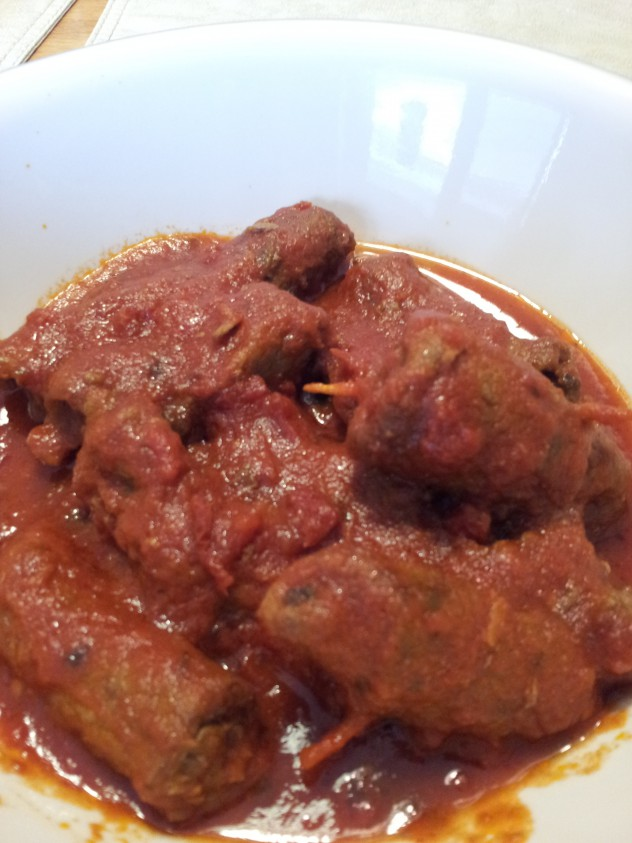

Braciole
Ingredients
- 4 thin slices boneless beef round (about 1 lb )
- 1 garlic clove, finely chopped
- 2 Tbsps freshly grated Pecorino Romano
- 2 Tbsps chopped fresh flat leaf parsley
- Salt and pepper to taste
- 4 thin slice prosciutto
- 3 Tbsps olive oil
- 2 garlic cloves, lightly crushed
- 1 cup dry red wine
- 4 cups tomato puree, or canned Italian tomatoes passed through food mill
- 4 fresh basil leaves,torn into small pieces
- 1 lb ziti or penne, cooked and still hot
Directions
- Place the beef between two pieces of plastic wrap and pound gently with a meat pounder or rubber mallet to 1/4 to 1/8 inch thickness.
- Sprinkle the beef with the garlic, cheese, parsley, and salt and pepper.
- Cover with the prosciutto slices.
- Roll up each pieces like a sausage and tie it with kitchen string.
- Heat the oil in a large pot.
- Add the braciole and garlic.
- Cook, turning the meat occasionally, until it is browned on all the sides and the garlic golden.
- Add the wine and simmer for 2 minutes.
- Remove and discard the garlic.
- Stir in the tomatoes puree and basil.
- Cover and cook over low heat,turning the meat occasionally, until it is tender when pierced with a fork, about 2 hours.
- Add a little water if the sauce becomes too thick.
- Serve the sauce over the hot cooked ziti as a first course, followed by the braciole.